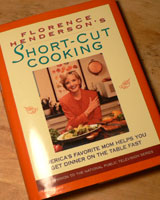
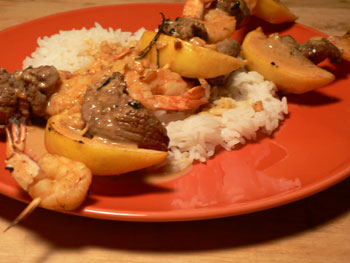

Steak and Shrimp Kebabs with Peanut Sauce

As I mentioned in a previous post, my Florence Henderson cookbook rules.
However, Short-cut Cooking is no longer in print. It follows that
- I have the short-cuts—you don’t.
- Florence belongs to me.
- Marsha, Marsha, Marsha.
- Mrs. P’s kitchen and Florence’s television kitchen both have antique-style prints of tomato varieties.
- This delicious recipe may be lost to history if I do not post it here.
Florence credits I Dream of Jeannie star Barbara Eden for inspiring the recipe. (Apparently Jeannie makes a killer lamb kebab.)
In preparing the meal, I find it helps to imagine yourself as a mother of six traipsing around in a harem-inspired costume. Or, if you have such a costume, by all means put it on. And send us pictures.
Peanut Sauce
- 2 tablespoons lemon juice
- 2 tablespoons soy sauce
- 1/2 cup creamy or chunky peanut butter
- 2 to 3 cloves garlic, crushed
- 1 tablespoon chopped fresh ginger
- 1 tablespoon light or dark brown sugar
- 1/4 teaspoon crushed red pepper flakes
- 1 tablespoon olive oil
- 1/2 cup orange juice
- Salt and freshly ground black pepper to taste
Kebabs
- 1 lb. tenderloin, cut into 1 1/2 inch cubes
- 2 dozen large shrimp, peeled, tails left on
- 4 lemons, cut into wedges
- 1/4 cup soy sauce
- 1/4 cup white wine
- 1 clove garlic, minced
- freshly ground black pepper
- Dash of cayenne pepper or hot pepper sauce
- 2 teaspoons fresh rosemary
- 8 skewers, soaked
Serves 4

Combine all sauce ingredients. Florence suggests a food processor for blending. Perhaps, when you’re married to an architect or an astronaut, food processors line up for you, ready for use. In this house you’re lucky to find a willing spoon. A spoon works fine. Set sauce aside.
Combine all kebab ingredients. The kebabs can be cooked on a grill or in the broiler. We’ve already explored NYC stovetop grilling, so I settled for broiling. Unfortunately this means you won’t be able to drizzle the substantial remains of the mixture on the cooking kebabs, so you may want to skimp on those ingredients.
The kebabs will cook in five minutes; turn them at three. Expect to raise the temperature of your apartment at least five degrees. (It’s the “broiler,” you’re asking for it.) And you may as well disable your fire alarm right now—burning soy sauce produces smoke, and those fancy new detectors all New Yorkers had installed against their will (FIre. FIIre. FIre. [ear-bleeding beep series] ) are not kidding around.
How good is this dish? I’m tempted to suggest, as would an UrbanDaddy restaurant preview, that making this dish will make your gal put out. That would please our audience of five straight men. So let me rephrase. If someone makes you this dish, put out.
Unless they’re the kind of guy to end with a really lame kicker.
Comments
Sounds delicious, and the presentation is lovely!
looks so delicious…
Sounds great, will take the kaftans and flimsy scarves out of storage
This looks absolutely scrumptious! Congrats- I love a good peanut sauce on anything.
i bet you do emily.
Kaftans? Oh yes, of course.
Thanks for the kind words, ladies!
What were the short cuts, exactly? I don’t remember eating anything before 10:30 PM. The Brady boys are in bed at that hour!
Yes, it’s hard to see anything quick about a recipe with such a lengthy list of ingredients; I’m getting exhausted just reading it. But maybe if you get that food processor the poor boy wouldn’t have to grind the sauce components between his knees and you could eat a lot earlier…
Florence has a list of “short-cut tips” at the end of each recipe. A better book title might have been Complicated Recipes with Zany Cheat Sheets. For this recipe she offers the following:
Really hot stuff, I know. I wasn’t going to bother typing it in, but I’ll do anything for the writers of Eat. And Leland, next time it’s gonna be microwaved hot dogs if ya don’t quit yer whinin’.
3. Rosemary stems from the garden is a shortcut tip? I don’t know what kind of mutant rosemary Flo is growing in her garden where she lives, but I can’t imagine that being anything but frustrating!
2. Keeping the olive oil out of the fridge is sort of a shortcut tip, I guess. Then you don’t have to warm it up between in your armpit.
4. I wasn’t going to rinse the shrimp at all!
SIX straight men, Nathan. LOL!!
Add a comment